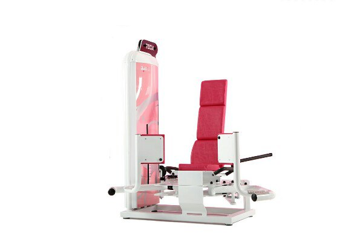
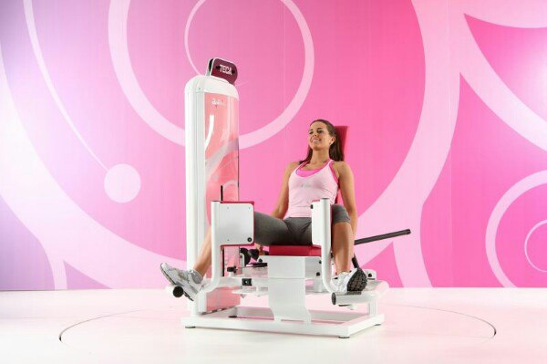
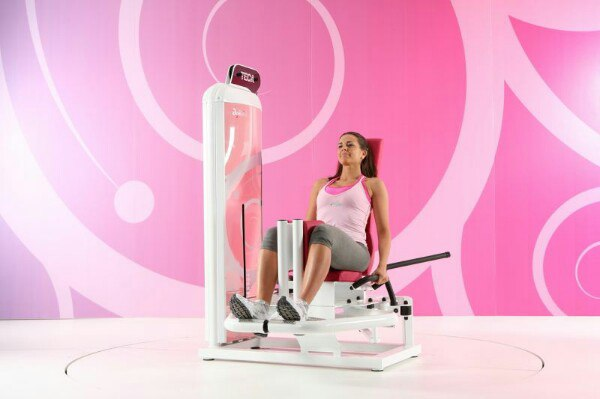

ЖЕНСКИЙ ФИТНЕС-КЛУБ
Уникальное итальянское оборудование
Профессиональные тренера
Комфортный график
Танцевальная тренировка Dance Woman
Стретчинг Flexibel Woman
Детская группа Kinder Group
Лучшее оборудование
У нас Вы сможете использовать единственное в своём роде итальянское обуродавние в Минске
-

Teca SWL10 Lunge
Силовой тренажер для функциональной тренировки в положении стоя, с преобладанием мускулатуры нижних конечностей.Тренажер развивает мышцы бедра (переднюю и среднюю) и ягодичные мышцы (maximus и minimus) в абсолютной эффективности благодаря прогрессивному, естественному движению тела.
- 
- 